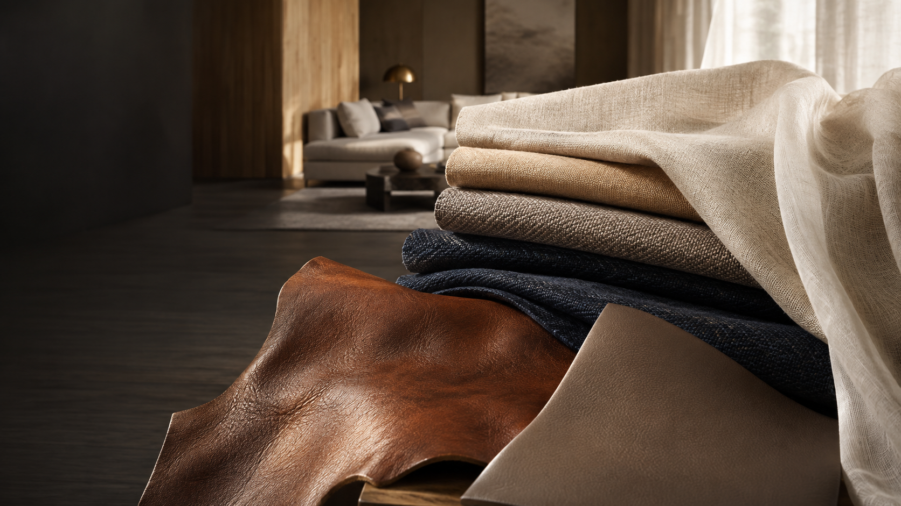
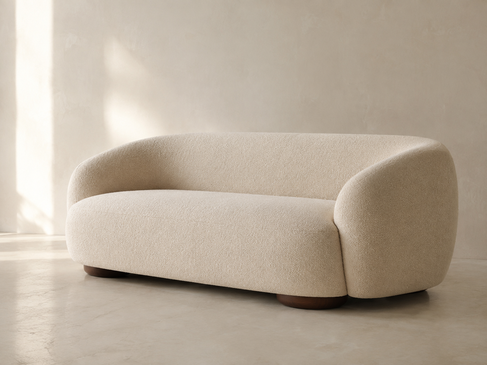
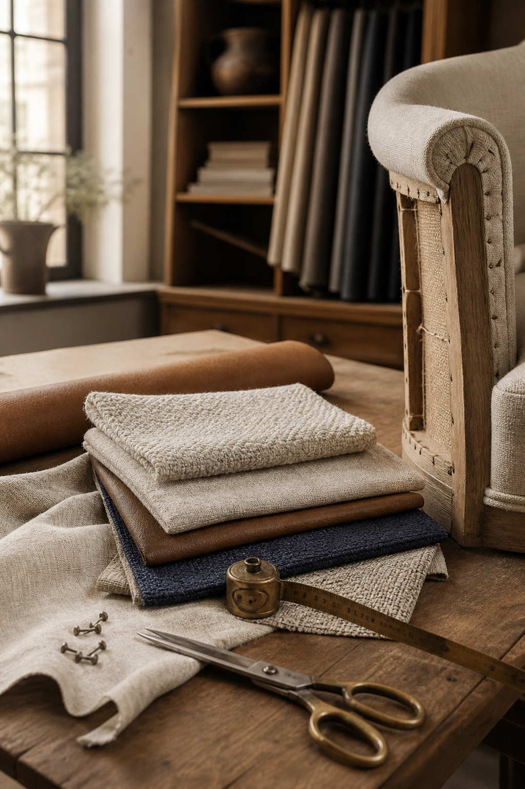

Premium Sofa Fabrics
Curated textures, colours and finishes selected to bring comfort, character and sophistication to every sofa.

The art of refined furnishing
Premium sofa fabrics, genuine leather, premium leatherette, curtains & sheers — complemented by customised sofa manufacturing, crafted around your style.
Explore our collectionThe Astoria perspective
From premium sofa fabrics and genuine leather to refined leatherette, curtains and sheers, every material sets the tone for a space. At Astoria Decor, we bring together carefully selected materials and customised craftsmanship to create furnishings that feel distinctly yours.
Start a conversation
What we do
Curated textures, colours and finishes selected to bring comfort, character and sophistication to every sofa.
Premium genuine leather selected for timeless appeal, natural character and lasting performance.
Refined leatherette surfaces offering style, durability and versatile design possibilities.
Elegant curtains and sheers designed to soften light, frame spaces and complete the look.
Made-to-measure sofas crafted around your preferred design, dimensions, materials and comfort.

The material library
Explore the textures, tones and finishes that set the character of a space.
The Astoria way
Premium MaterialsCarefully selected for touch, quality, performance and lasting appeal.
Bespoke SolutionsEvery material, dimension and detail is chosen around your requirements.
Expert CraftsmanshipSkilled workmanship brings precision and care to every customised piece.
95/10, Muninianjappa Garden
Old KEB Office, Kaval Byrasandra
RT Nagar Post, Bengaluru 560032